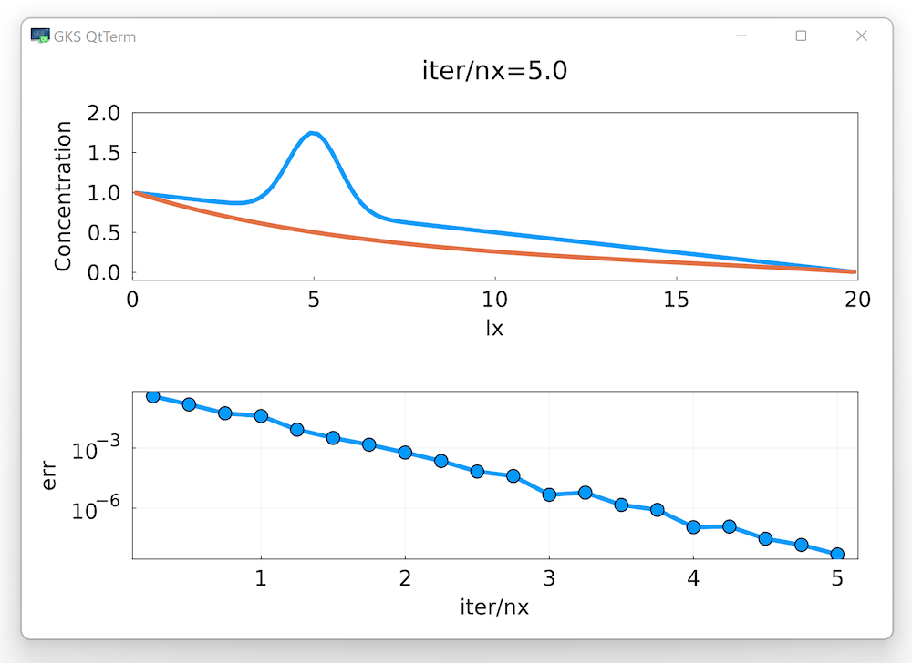

Agenda
üìö Solving elliptic PDEs, 1D to 2D
üíª Personal Julia install, Julia'sProjectenvironment, Julia's package manager
üöß Exercises:
Damped wave equation in 1D and 2D
Port 1D codes to 2D
üëâ get started with exercises
The damped wave equation
Spectral analysis of linear PDEs
Pseudo-transient method for solving elliptic PDEs
Spatial discretisation: 1D and 2D
In the previous lecture, we established that the solution to the elliptic PDE could be obtained through integrating in time a corresponding parabolic PDE:
\[ \frac{\partial C}{\partial t} - \frac{\partial^2 C}{\partial x^2} = 0 \]and discussed the limitations of this approach for numerical modelling, i.e., the quadratic dependence of the number of time steps on the number of grid points in spatial discretisation.
In this lecture, we'll improve the convergence rate of the elliptic solver, and consider the generalisation to higher dimensions
Let's recall the stability conditions for diffusion and acoustic wave propagation:
dt = dx^2/dc/2 # diffusion
dt = dx/sqrt(1/β/ρ) # acoustic wave propagationWe can see that the acceptable time step for an acoustic problem is proportional to the grid spacing dx, and not dx^2 as for the diffusion.
The number of time steps required for the wave to propagate through the domain is only proportional to the number of grid points nx.
Can we use that information to reduce the time required for the elliptic solver to converge?
In the solution to the wave equation, the waves do not attenuate with time: there is no steady state!
Let's add diffusive properties to the wave equation by simply combining the physics:
\[\begin{aligned} \rho\frac{\partial V_x}{\partial t} &= -\frac{\partial P}{\partial x} \\[10pt] \beta\frac{\partial P}{\partial t} + \frac{P}{\eta} &= -\frac{\partial V_x}{\partial x} \end{aligned}\]Note the addition of the new term \(\frac{P}{\eta}\) to the left-hand side of the mass balance equation, which could be interpreted physically as accounting for the bulk viscosity of the gas.
Equvalently, we could add the time derivative to the diffusion equation
\[\begin{aligned} \rho\frac{\partial q}{\partial t} + \frac{q}{D} &= -\frac{\partial C}{\partial x} \\[10pt] \frac{\partial C}{\partial t} &= -\frac{\partial q}{\partial x} \end{aligned}\]In that case, the new term would be \(\rho\frac{\partial q}{\partial t}\), which could be interpreted physically as adding the inertia to the momentum equation for diffusive flux.
Let's eliminate \(V_x\) and \(q\) in both systems to get one governing equation for \(P\) and \(C\), respectively:
\[\begin{aligned} \beta\frac{\partial^2 P}{\partial t^2} + \frac{1}{\eta}\frac{\partial P}{\partial t} &= \frac{1}{\rho}\frac{\partial^2 P}{\partial x^2} \\[10pt] \rho\frac{\partial^2 C}{\partial t^2} + \frac{1}{D}\frac{\partial C}{\partial t} &= \frac{\partial^2 C}{\partial x^2} \end{aligned}\]We refer to such equations as the damped wave equations. They combine wave propagation with diffusion, which manifests as wave attenuation, or decay. The damped wave equation is a hyperbolic PDE.
In the following, we'll use the damped wave equation for concentration \(C\) obtained by augmenting the diffusion equation with density \(\rho\).
Starting from the existing code implementing time-dependent diffusion, let's add the intertial term \(\rho\frac{\partial q}{\partial t}\).
üëâ You can use the l2_diffusion_1D.jl script as starting point.
First step is to add the new physical parameter \(\rho\) to the # physics section:
# physics
...
ρ = 20.0Then we increase the number of time steps and reduce the frequency of plotting, and modify the initial conditions to have more interesting time evolution:
# numerics
nvis = 50
...
# derived numerics
...
nt = nx^2 ÷ 5
...
# array initialisation
C = @. 1.0 + exp(-(xc-lx/4)^2) - xc/lx; C_i = copy(C)Then we modify the time loop to incorporate the new physics:
for it = 1:nt
qx .-= dt./(ρ*dc + dt).*(qx + dc.*diff(C)./dx)
C[2:end-1] .-= dt.*diff(qx)./dx
...
endüëâ Your turn. Try to add the inertial term.
Hint: There are two ways of adding the inertial term into the update rule.
We could either take the known flux
qinq/dcfrom the previous time step (explicit time integration), or the unknown flux from the next time step (implicit time integration).Could we treat the flux implicitly without having to solve the linear system?
What are the benefits of the implicit time integration compared to the explicit one?
If the implementation is correct, we should see something like this:
The waves decay, now there is a steady state! üéâ The time it takes to converge, however, doesn't seem to improve...
Now we solve the hyperbolic PDE, and with the implicit flux term treatment, the time step should become proportional to the grid spacing dx instead of dx^2.
Looking at the damped wave equation for \(C\), and recalling the stability condition for wave propagation, we modify the time step, reduce the total number of time steps, and increase the frequency of plotting calls:
# numerics
...
nvis = 5
# derived numerics
...
dt = dx/sqrt(1/ρ)
nt = 5nxRe-run the simulation and see the results:
Now, this is much better! We observe that in less time steps, we get a much faster convergence. However, we introduced the new parameter, \(\rho\). Does the solution depend on the value of \(\rho\)?
üëâ Try changing the new parameter œÅ, increasing and decreasing it. What happens to the solution?
We notice that depending on the value of the parameter ρ, the convergence to steady-state can be faster or slower. If ρ is too small, the process becomes diffusion-dominated, and we're back to the non-accelerated version. If ρ is too large, waves decay slowly.
If the parameter ρ has optimal value, the convergence to steady-state could be achieved in the number of time steps proportional to the number of grid points nx and not nx^2 as for the parabolic PDE.
For linear PDEs it is possible to determine the optimal value for ρ analytically:
ρ = (lx/(dc*2π))^2How does one derive the optimal values for other problems and boundary conditions? Unfortunately, we don't have time to dive into details in this course...
The idea of accelerating the convergence by increasing the order of PDE dates back to the work by Frankel (1950) where he studied the convergence rates of different iterative methods. Frankel noted the analogy between the iteration process and transient physics. In his work, the accelerated method was called the second-order Richardson method
üëÄ If interested, R√§ss et al. (2022) paper is a good starting point.
In this course, we call any method that builds upon the analogy to the transient physics the pseudo-transient method.
Using this analogy proves useful when studying multi-physics and nonlinear processes. The pseudo-transient method isn't restricted to solving the Poisson problems, but can be applied to a wide range of problems that are modelled with PDEs.
In a pseudo-transient method, we are interested only in a steady-state distributions of the unknown field variables such as concentration, temperature, etc.
We consider time steps as iterations in a numerical method. Therefore, we replace the time \(t\) in the equations with pseudo-time \(\tau\), and a time step it with iteration counter iter. When a pseudo-transient method converges, all the pseudo-time derivatives \(\partial/\partial\tau\), \(\partial^2/\partial\tau^2\) etc., vanish.
For example, consider the damped acoustic problem that we introduced in the beginning:
\[\begin{aligned} \rho\frac{\partial V_x}{\partial\tau} &= -\frac{\partial P}{\partial x} \\[10pt] \beta\frac{\partial P}{\partial\tau} + \frac{P}{\eta} &= -\frac{\partial V_x}{\partial x} \end{aligned}\]At the steady-state, the second equation reads:
\[ \frac{P}{\eta} = -\frac{\partial V_x}{\partial x} \]The velocity divergence is proportional to the pressure. If we wanted to solve the incompressible problem (i.e. the velocity divergence = 0), and were interested in the velocity distribution, this approach would lead to incorrect results. If we only want to solve the Laplace problem \(\partial^2 P/\partial x^2 = 0\), we could consider \(V_x\) purely as a numerical variable.
In other words: only add those new terms to the governing equations that vanish when the iterations converge!
Let's modify the code structure of the new elliptic solver. We need to monitor convergence and stop iterations when the error has reached predefined tolerance.
To define the measure of error, we introduce the residual:
\[ r_C = D\frac{\partial^2 \widehat{C}}{\partial x^2} \]where \(\widehat{C}\) is the pseudo-transient solution
There are many ways to define the error as the norm of the residual, the most popular ones are the \(L_2\) norm and \(L_\infty\) norm. We will use the \(L_\infty\) norm here:
\[ \|\boldsymbol{r}\|_\infty = \max_i(|r_i|) \]Add new parameters to the # numerics section of the code:
# numerics
nx = 200
ϵtol = 1e-8
maxiter = 20nx
ncheck = ceil(Int,0.25nx)Here ϵtol is the tolerance for the pseudo-transient iterations, maxiter is the maximal number of iterations, that we use now instead of number of time steps nt, and ncheck is the frequency of evaluating the residual and the norm of the residual, which is a costly operation.
We turn the time loop into the iteration loop, add the arrays to store the evolution of the error:
# iteration loop
iter = 1; err = 2ϵtol; iter_evo = Float64[]; err_evo = Float64[]
while err >= ϵtol && iter <= maxiter
qx .-= ...
C[2:end-1] .-= ...
if iter % ncheck == 0
err = maximum(abs.(diff(dc.*diff(C)./dx)./dx))
push!(iter_evo,iter/nx); push!(err_evo,err)
p1 = plot(xc,[C_i,C];xlims=(0,lx),ylims=(-0.1,2.0),
xlabel="lx",ylabel="Concentration",title="iter/nx=$(round(iter/nx,sigdigits=3))")
p2 = plot(iter_evo,err_evo;xlabel="iter/nx",ylabel="err",
yscale=:log10,grid=true,markershape=:circle,markersize=10)
display(plot(p1,p2;layout=(2,1)))
end
iter += 1
endNote that we save the number of iteration per grid cell iter/nx
If the value of pseudo-transient parameter ρ is optimal, the number of iterations required for convergence should be proportional to nx, thus the iter/nx should be approximately constant.
üëâ Try to check that by changing the resolution nx.
Let's implement our first pseudo-transient multi-physics solver by adding chemical reaction:
\[ D\frac{\partial^2 C}{\partial x^2} = \frac{C - C_{eq}}{\xi} \]As you might remember from the exercises, characteristic time scales of diffusion and reaction can be related through the non-dimensional Damköhler number \(\mathrm{Da}=l_x^2/D/\xi\).
üëâ Let's add the new physical parameters and modify the iteration loop:
# physics
...
C_eq = 0.1
da = 10.0
ξ = lx^2/dc/da
...
# iteration loop
iter = 1; err = 2ϵtol; iter_evo = Float64[]; err_evo = Float64[]
while err >= ϵtol && iter <= maxiter
...
C[2:end-1] .-= dτ./(1 + dτ/ξ) .*((C[2:end-1] .- C_eq)./ξ .+ diff(qx)./dx)
...
endHint: don't forget to modify the residual!
Run the simulation and see the results: 
As a final touch, let's refactor the code and extract the magical constant 2π from the definition of numerical density ρ:
re = 2π
ρ = (lx/(dc*re))^2We call this new parameter re due to it's association to the non-dimensional Reynolds number relating intertial and dissipative forces into the momentum balance.
Interestingly, the convergence rate of the diffusion-reaction systems could be improved significantly by modifying re to depend on the previously defined Damköhler number da:
re = œÄ + sqrt(œÄ^2 + da)üëâ Verify that the number of iterations is indeed lower for the higher values of the Damk√∂hler number.
Converting the 1D code to higher dimensions is remarkably easy thanks to the explicit time integration. Firstly, we introduce the domain extent and the number of grid points in the y-direction:
# physics
lx,ly = 20.0,20.0
...
# numerics
nx,ny = 100,100Then, we calculate the grid spacing, grid cell centers locations, and modify the time step to comply with the 2D stability criteria:
# derived numerics
dx,dy = lx/nx,ly/ny
xc,yc = LinRange(dx/2,lx-dx/2,nx),LinRange(dy/2,ly-dy/2,ny)
dτ = dx/sqrt(1/ρ)/sqrt(2)We allocate 2D arrays for concentration and fluxes:
# array initialisation
C = @. 1.0 + exp(-(xc-lx/4)^2-(yc'-ly/4)^2) - xc/lx
qx,qy = zeros(nx-1,ny),zeros(nx,ny-1)and add the physics for the second dimension:
while err >= ϵtol && iter <= maxiter
qx .-= dτ./(ρ + dτ/dc).*(qx./dc .+ diff(C,dims=1)./dx)
qy .-= dτ./(ρ + dτ/dc).*(qy./dc .+ diff(C,dims=2)./dy)
C[2:end-1,2:end-1] .-= dτ./(1 + dτ/ξ) .*((C[2:end-1,2:end-1] .- C_eq)./ξ .+ diff(qx[:,2:end-1],dims=1)./dx .+
diff(qy[2:end-1,:],dims=2)./dy)
...
enddiff(C,dims=1)./dx, diff(C,dims=2)./dyLast thing to fix is the visualisation, as now we want the top-down view of the computational domain:
p1 = heatmap(xc,yc,C';xlims=(0,lx),ylims=(0,ly),clims=(0,1),aspect_ratio=1,
xlabel="lx",ylabel="ly",title="iter/nx=$(round(iter/nx,sigdigits=3))")Let's run the simulation:
Switching from parabolic to hyperbolic PDE allows to approach the steady-state in number of iterations, proportional to the number of grid points
Pseudo-transient (PT) method is the matrix-free iterative method to solve elliptic (and other) PDEs by utilising the analogy to transient physics
Using the optimal iteration parameters is essential to ensure the fast convergence of the PT method
Extending the codes to 2D and 3D is straightforward with explicit time integration
https://docs.julialang.org/en/v1/stdlib/REPL/
julia starts the REPL, run julia --help to see options.
Pretty powerful REPL:
completion
history:
start typing + up-arrow
Ctrl-r
unicode completion
several sub-modes: shell, Pkg, help
they are displayed with a different prompt
shell mode in Windows, try: shell> powershell
Demo
Docs:
Powerful package manager:
installing, updating and removing packages
separate environments for separate projects
Demo
Take-home: make a separate Project for each of your projects/assignments!
Packages installed in your global environment are always available, thus useful for utility packages.
I have installed in my global environment:
Revise.jl – To load it at startup: mkdir -p ~/.julia/config/ && echo "using Revise" >> ~/.julia/config/startup.jl
BenchmarkTools.jl – Accurate timers for benchmarking, even quick fast running functions
IJulia.jl – The Julia Jupyter kernel. Needs to be installed globally.
Infiltrator.jl – A debugger. Pretty basic but works well without slowing down program execution (unlike Debugger.jl which has more features).
StatProfilerHTML.jl or ProfileView.jl – To be used with the built in Profile module. Displays nice flame graphs (probably does not work on the GPU)
üëâ See Logistics for submission details.
The goal of this exercise is to:
Solidify the understanding of the pseudo-transient method
Implement transient diffusion solver with implicit time integration using pseudo-transient method
Grasp the difference between physical time stepping and pseudo-transient iterations
In this first exercise, you will modify the diffusion-reaction example to model transient diffusion, but this time including not just the pseudo-time derivative \(\partial/\partial\tau\), but also the physical time derivative \(\partial/\partial t\).
Recall the transient diffusion equation:
\[ D\frac{\partial^2 C}{\partial x^2} = \frac{\partial C}{\partial t} \]Let's discretise only the time derivative using the first-order Euler integration rule:
\[ \frac{\partial C}{\partial t} \approx \frac{C - C_\mathrm{old}}{\mathrm{d}t} \]where \(\mathrm{d}t\) is the physical time step, and \(C_\mathrm{old}\) is the concentration at the previous time step. If we discretise the spatial derivatives is a usual way and update \(C\) using the explicit update rule, the maximum value for the time step is restricted by the stability criteria, and is proportional to the grid spacing \(\mathrm{d}x\). However, if we consider the \(C\) to be from the implicit layer of the time integration scheme, we don't have that restriction anymore and are free to use any time step. The downside is that in this case we have to solve the linear system to get the values at the next time step.
A close look at the equation with the discretised time derivative reveals that this equation is mathematically identical to the diffusion-reaction equation that we already learned how to solve! The value for the concentration at the old time step \(C_\mathrm{old}\) and the physical time step \(\mathrm{d}t\) correspond to the equilibrium concentration \(C_\mathrm{eq}\) and the time scale of reaction, respectively.
At each physical time step the implicit problem could be solved using the PT method. Thus, there are present time derivatives both in physical time and in pseudo-time. This approach is therefore called the dual-time method. The code structure would include the two nested loops, one for the physical time and one for the pseudo-transient iterations:
anim = @animate for it = 1:nt
C_old .= C
iter = 1; err = 2ϵtol; iter_evo = Float64[]; err_evo = []
while err >= ϵtol && iter <= maxiter
...
iter += 1
end
# visualisation
...
end
gif(anim,"anim.gif";fps=2)üëâ Download the l3_steady_diffusion_reaction_1D.jl script here if needed (available after the course).
Create a new folder lecture3 in your private GitHub repository.
Add a README.md to that folder.
Add a copy of the l3_steady_diffusion_reaction_1D.jl script we did in class to your exercise folder and rename it implicit_diffusion_1D.jl.
Modify that script so that it includes the physical time loop and performs the numerical experiment as follows.
As a first task, rename the C_eq to C_old and ξ to dt. Make C_old an array and initialise it with copy of C. Set the da number equal to da = 1000.0. Add the new parameter nt = 10 indicating the number of physical time steps. Wrap the iteration loop in the outer for-loop to make physical time steps. Move the visualisation outside from the iteration loop, so that the plots are only updated once per physical timestep (keeping error checking for iterations).
Perform the numerical experiment using the developed code. Report your results in a 2-panel gif, plotting a) the spatial distribution of concentration C after nt=10 time steps, on top of the plot of the initial concentration distribution, and b) the error as function of iteration/nx. Include the gif in the README.md and provide one or two sentence of description.
@animate macro as in the provided code snippet to realise a gif of your simulation results. Use  to insert a figure or animation in the README.md.üëâ See Logistics for submission details.
The goal of this exercise is to implement the advection-diffusion with implicit timestepping for diffusion. Start from the time-dependent code you developed in Exercise 1. Then add advection step after the iteration loop so that the concentration is advected only once per physical time step.
Duplicate the file implicit_diffusion_1D.jl in the folder lecture3 and name it implicit_advection_diffusion_1D.jl.
Modify that script so that it includes the advection step as follows.
Add advection to the implicit diffusion code, using an advection velocity of
vx = 1.0and use the stability criteria for advection to specify the physical timestep:
dt = dx/abs(vx)Note that now one doesn't need to take the minimum between the time steps for diffusion and advection, since the diffusion that is more restrictive is resolved implicitly. Also, we do not consider any change in velocity direction at mid-simulation.
Now the physical timestep dt is defined by advection velocity, so the da number that is needed for calculating the optimal PT parameters, has to be computed from dt:
# derived numerics
dt = dx/abs(vx)
da = lx^2/dc/dt
re = ...
ρ = ...
dτ = ...Report with the figure, plotting a spatial distribution of concentration C after nt=10 time steps, on top of the plot of the initial concentration distribution. Add the figure to the README.md file.
üëâ See Logistics for submission details.
The goal of this exercise is to
Extend the advection-diffusion solver with implicit diffusion step from 1D to 2D
Implement the upwind advection scheme in 2D
Modify the problem configuration
Create a code implicit_advection_diffusion_2D.jl for this exercise and add it to the lecture3 folder in your private GitHub repo. Report the results of this exercise within a new section in the README.
Duplicate the the implicit_diffusion_1D.jl code you created in Exercise 2 and name it implicit_advection_diffusion_2D.jl.
Extend the 1D calculations to 2D
Add advection as in Exercise 2
Modify the initial conditions to include following parameters in the # physics section:
# physics
lx,ly = 10.0,10.0
dc = 1.0
vx = 10.0
vy = -10.0and implement following initial condition
# array initialisation
C = @. exp(-(xc-lx/4)^2 -(yc'-3ly/4)^2)
C_old = copy(C)Choose the time step according to the following (stability) criterion:
dt = min(dx/abs(vx),dy/abs(vy))/2Also make sure to use the following numerical parameters (in number of grid points nx,ny)
# numerics
nx,ny = 200,201
ϵtol = 1e-8
maxiter = 10nx
ncheck = ceil(Int,0.02nx)
nt = 50Note that the iterative pseudo-timestep limitation should be updated to
dτ = min(dx,dy)/sqrt(1/ρ)/sqrt(2)for 2D configurations.
qy and use now 2D arrays: qx,qy = zeros(nx-1,??), zeros(??,ny-1).Repeat the steps from the Exercise 1 to create the implicit time-dependent diffusion solver but in 2D. Do not include advection yet. Pay attention to add information relative to the second dimension whenever it's needed.
Make a short animation showing the time evolution of the concentration field C during nt = 50 physical time steps. The figure should contain 2 subplots, the first displaying the heatmap of the C field and the second the evolution of the by nx normalised iteration count:
# visualisation
p1 = heatmap(xc,yc,C';xlims=(0,lx),ylims=(0,ly),clims=(0,1),aspect_ratio=1,
xlabel="lx",ylabel="ly",title="iter/nx=$(round(iter/nx,sigdigits=3))")
p2 = plot(iter_evo,err_evo;xlabel="iter/nx",ylabel="err",
yscale=:log10,grid=true,markershape=:circle,markersize=10)
display(plot(p1,p2;layout=(2,1)))Include now the advection step in a similar way as in the 1D case from the previous exercise, i.e., adding them after the iteration loop within the time loop. Use advection velocities and parameters listed above, taking care in implementing the "upwind" strategy discussed in Lecture 2.
Make a short animation showing the time evolution of the concentration field C during nt = 50 physical time steps using the same figure layout as for Task 1.
üëâ See Logistics for submission details.
The goal of this exercise is to confirm numerically the optimality of the pseudo-transient parameters for a 1D elliptic solver (e.g., solving steady-state diffusion).
You will make the systematic study of the convergence rate of the pseudo-transient method, varying the numerical parameter re on a regular grid of values.
üëâ Download the l3_steady_diffusion_1D.jl script here if needed (available after the course).
Create a new code steady_diffusion_parametric_1D.jl for this exercise and add it to the lecture3 folder in your private GitHub repo.
Report the results of this exercise within a new section in the README.md.
Start from the 1D elliptic solver. Add the new variable storing the range of factors to multiply the re parameter with to the # numerics section. Add new array to store the number of iterations per grid block for each value of this factor:
# numerics
fact = 0.5:0.1:1.5
conv = zeros(size(fact))Wrap the # array initialisation and # iteration loop sections of the code in a for-loop over indices of fact:
for ifact in eachindex(fact)
# array initialisation
...
# iteration loop
while ...
end
endMove the definition of ρ to the beginning of the new loop. Extract the value 2π and store in the variable re, multiplying by the corresponding value from fact:
for ifact in eachindex(fact)
re = 2π*fact[ifact]
ρ = (lx/(dc*re))^2
dτ = ...
...
endAfter every elliptic solve, store the iter/nx value in the conv[ifact]. Report the results as a figure, plotting the conv vs fact. You should get a picture like this: